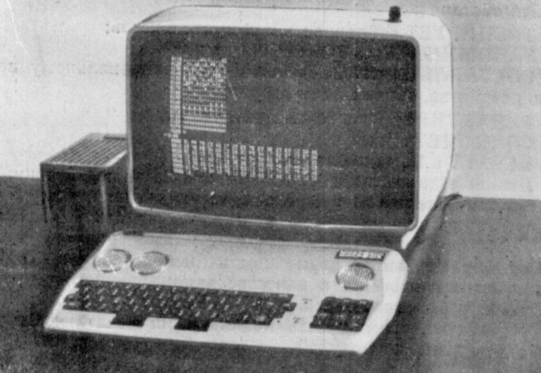
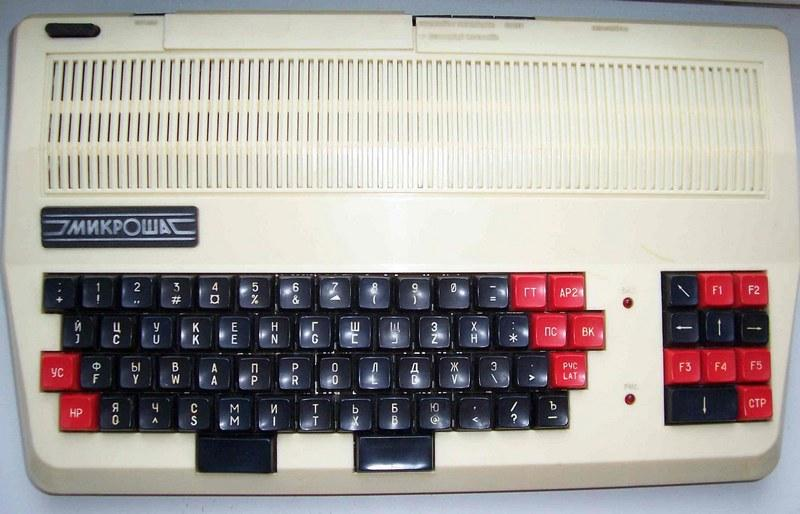

Вот как выглядели первые варианты компьютера "Микроша":

Отличительная особенность в том, что две левые решетки - это решетки охлаждения, а правая решетка - это и решетка охлаждения, и отверстие за которым скрыт звуковой динамик.
В последствие от такого дизайна отказались, и сделали цельную решетку охлаждения из самого пластика верхней панели, и перенесли шилдик с названием:

Так же можно разглядеть, что на дополнительной кла